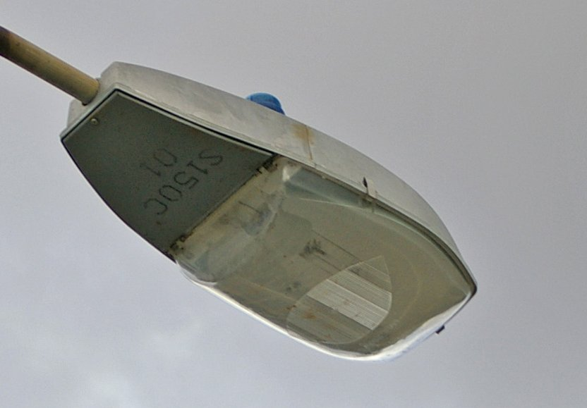
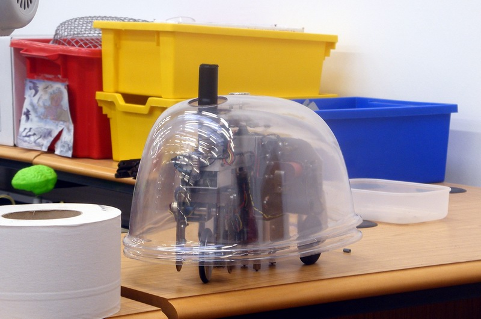

Decírselo a alguien que obedece al pie de la letra
Cuando hablamos con personas, la mitad del trabajo lo hace quien escucha. Una máquina no hace nada de eso.
De qué va este tema
Programar no es aprender un idioma raro: es decir las cosas sin dejar huecosVoz sintetizada y audio propio. La boca sigue el volumen real de la voz.
Vamos a jugar a una cosa antes de tocar nada. Por parejas: uno explica y otro obedece.
Es un juego viejo y funciona siempre, porque descubre algo que no se ve hasta que pasa: cuando hablamos con personas, la mitad del trabajo lo hace quien escucha. Rellena los huecos, adivina lo que quisiste decir y corrige tus errores sin avisarte.
Una máquina no hace nada de eso. Una máquina es tu compañero jugando al juego, pero sin parar nunca y sin reirse.
En el tema del ordenador ya viste la idea: es una máquina que no sabe hacer nada y que obedece una lista escrita aparte. Lo que no viste es lo difícil que es escribir esa lista, y de eso va este tema.
Una lista de instrucciones que una máquina puede seguir tiene que cumplir tres cosas. Si le falta una, no funciona.
Definición
Algoritmo: conjunto ordenado y finito de instrucciones sin ambigüedad que resuelve un problema.
- Ordenado: importa el orden. «Ponte los calcetines y luego los zapatos» no es lo mismo al revés.
- Finito: tiene que acabar. Un algoritmo que no termina no sirve.
- Sin ambigüedad: cada instrucción significa una sola cosa. «Un poco de sal» no vale; «dos gramos de sal» sí.
Ahora pruébalo. Este robot obedece tres instrucciones y nada más. Llévalo hasta el círculo verde.
Fíjate en lo que pasa cuando choca. El robot no esquiva la pared, aunque cualquiera vería que hay una pared. No es que sea tonto: es que solo hace lo que pone, y lo que ponía era avanzar.
Esto, que parece una pega, es justo lo que hace útil a una máquina: hace siempre lo mismo. Un torno que decidiera por su cuenta sería un peligro, no un avance.
Cómo se busca un fallo en un programa
Cuando no hace lo que esperabas, no cambies cosas al azar. Sigue el programa tú mismo, instrucción por instrucción, con el dedo sobre el dibujo, hasta encontrar la primera que no hace lo que creías. Eso se llama depurar, y es la mitad del trabajo de programar.
Primera parte (8 min)
Resolved los dos mapas del robot. Anotad en la libreta el programa de cada uno, con las instrucciones numeradas, y cuántas han hecho falta.
Segunda parte (12 min)
Escribid el algoritmo de hacer un café con leche en la máquina del instituto, para un robot que solo entiende estas instrucciones:
coge X·deja X en Y·pulsa X·espera N segundos
- Escribidlo numerado, sin saltaros nada.
- Intercambiad la libreta con otra pareja y ejecutad el suyo al pie de la letra, buscando el primer paso que falle.
- Devolvedlo con el fallo señalado. Corregid el vuestro.
Cómo se evalúa
- Los dos mapas resueltos y anotados (3 puntos).
- El algoritmo del café está numerado y sin ambigüedades (4 puntos).
- El fallo señalado en el algoritmo de la otra pareja es real (3 puntos).
- ¿Qué tres condiciones tiene que cumplir un algoritmo?
Ver respuesta
Ser ordenado, finito y sin ambigüedad. Si le falta cualquiera de las tres, la máquina no puede seguirlo.
- El robot se chocó contra una pared que se veía perfectamente. ¿Por qué?
Ver respuesta
Porque la instrucción decía avanza y la máquina obedece: no mira, no interpreta y no corrige. Ver la pared es trabajo tuyo al escribir el programa.
- ¿Qué es depurar?
Ver respuesta
Seguir el programa paso a paso buscando la primera instrucción que no hace lo que creías. No es cambiar cosas a ver si suena la flauta.
Treinta veces «avanza» no es un programa
Un programa largo es pesado. Uno que no puedes escribir porque no sabes cuántas veces, es imposible.
Abre el mapa 1 de aquí abajo y resuélvelo como en la sesión anterior, pulsando «avanza» una y otra vez.
Esa última pregunta es la buena. Un programa largo es solo pesado; un programa que no puedes escribir porque no sabes cuántas veces es imposible. Y eso pasa constantemente: no sabes cuántos alumnos habrá en la lista, ni cuántos mensajes llegarán.
Definiciones
Bucle (o iteración): instrucción que hace que un trozo de programa se repita. Repetir cuatro veces «avanza» ocupa una línea en vez de cuatro.
Condicional: instrucción que hace que un trozo de programa se ejecute solo si se cumple algo. Es lo que permite que el programa decida.
Prueba el bucle. Ahora hay un botón nuevo: repite N veces.
Fíjate en la lista de la derecha: el bucle no ahorra trabajo a la máquina. Al ejecutarlo, las cuatro copias siguen ahí, una detrás de otra. Lo que ahorra es escritura, y sobre todo permite escribir algo que depende de un número que todavía no conoces.
Por eso en programación hay una regla que vale para toda la vida: si te ves copiando y pegando lo mismo, es que falta un bucle.
Los dos tipos de bucle
- Repetir N veces: cuando sabes cuántas. «Da cuatro pasos».
- Repetir mientras (o hasta): cuando no lo sabes. «Avanza mientras no haya pared». Este es el que hace falta de verdad, y el que puede quedarse colgado para siempre si la condición nunca cambia.
Qué hay que hacer
- Resolved los dos mapas usando bucles. Anotad el programa y cuántas líneas ocupa escrito con bucles y cuántas ocuparía sin ellos.
- Escribid en la libreta, en lenguaje normal, un programa con bucle y condicional para esto: un robot aspirador que recorre una habitación. Tiene un sensor que dice si hay pared delante.
- Buscad el fallo en este programa, que se queda colgado para siempre:
repite mientras haya pared delante: gira a la derecha
¿Cuándo se cuelga, y por qué?
Cómo se evalúa
- Los dos mapas resueltos con bucles (3 puntos).
- El programa del aspirador usa bucle y condicional (4 puntos).
- La explicación del programa colgado es correcta (3 puntos).
- ¿Un bucle hace que la máquina trabaje menos?
Ver respuesta
No. Ejecuta exactamente las mismas instrucciones. Lo que ahorra es escritura, y permite escribir programas que dependen de un número que aún no conoces.
- ¿Cuándo hace falta un bucle «mientras» en vez de uno de N veces?
Ver respuesta
Cuando no sabes de antemano cuántas repeticiones harán falta: avanzar hasta que haya pared, leer hasta que se acabe el fichero, esperar hasta que alguien pulse.
- ¿Qué es un bucle infinito y cuándo aparece?
Ver respuesta
Un bucle que no termina nunca, porque dentro de él no pasa nada que cambie la condición de salida. Es el error más común al empezar con bucles «mientras».
Un programa, solo, no toca nada del mundo
Le falta cuerpo: entradas para enterarse de lo que pasa y salidas para cambiar algo.
Tu robot de las dos sesiones anteriores hace lo que le mandas. Pero pruébalo con esto:
No puede. Y no es que le falte una instrucción: es que le falta cuerpo. Un programa, solo, no toca nada del mundo. Para que lo toque hacen falta dos cosas que el ordenador de la sesión del tema 7 ya tenía, pero que aquí se ven muchísimo mejor:
- Entradas: por donde le llega al programa lo que pasa fuera. Un botón, un sensor de luz, un termómetro.
- Salidas: por donde el programa cambia algo fuera. Una luz, un altavoz, un motor.
Una placa como la micro:bit es exactamente eso: un ordenador minúsculo con las entradas y las salidas a la vista, para que se entienda qué está pasando.
La micro:bit es una placa del tamaño de media tarjeta de crédito. Lo interesante es que todo lo que tiene se ve:
Qué lleva una micro:bit
- 25 LED en cuadrícula de 5 × 5: la salida más visible.
- Dos botones, A y B: las entradas más sencillas.
- Sensores dentro: acelerómetro (sabe si la mueves), brújula, termómetro, micrófono y sensor de luz.
- Pines en el borde dorado: por ahí se le conectan cosas de fuera.
- Radio: puede hablar con otras micro:bit sin cables.
Los dos bloques que lo organizan todo
Al iniciar: lo que se hace una sola vez, al encender.
Para siempre: lo que se repite sin parar mientras la placa tenga corriente. Es un bucle infinito, y aquí no es un error: es lo normal. Una máquina que vigila algo tiene que estar mirando siempre.
Prueba la placa aquí mismo. Los tres programas funcionan de verdad, y a la derecha tienes los bloques que los escriben.
Definición
Variable: un cajón con nombre donde el programa guarda un dato para acordarse de él más tarde. Sin variables, un programa no puede recordar nada entre una cosa y la siguiente.
Los tres bloques que ya sabes usar
- Secuencia: una instrucción detrás de otra. Sesión 1.
- Bucle: repetir. Sesión 2, y aquí el para siempre.
- Evento: al pulsar el botón A. El programa espera a que pase algo, en vez de ir seguido.
Fíjate en el programa del dado: si pulsas A, no pasa nada. Y no es que esté roto: es que no hay ningún bloque que escuche al botón A. La placa no ignora el botón por capricho; sencillamente nadie le ha dicho qué hacer con él.
Y prueba a subir el contador por encima de 9. El número deja de caber en 5 × 5, y la placa de verdad lo hace pasar desfilando de derecha a izquierda. Eso también es una decisión de diseño de alguien: con 25 luces, o desfila o no se puede.
Dónde se hace
En makecode.microbit.org, que funciona en el navegador y no hay que instalar nada. Trae su propia placa simulada, así que se puede probar todo aunque no haya placas suficientes.
Qué hay que hacer
- El icono. Dibuja el tuyo en la escena de arriba, cópialo al bloque mostrar LEDs de MakeCode y ponlo dentro de al iniciar.
- El contador. Crea la variable cuenta y haz que A sume, B reste y la placa muestre el número. Comprueba qué pasa al pasar de 9.
- El dado. Cambia el botón B por al agitar y usa número al azar entre 1 y 6. Muéstralo con mostrar número primero, y luego dibuja tú las seis caras con mostrar LEDs.
- El fallo buscado. Quita el bloque poner cuenta a 0 del contador y anota qué pasa y por qué.
Cómo se evalúa
- El icono se muestra al iniciar (2 puntos).
- El contador usa una variable y responde a los dos botones (3 puntos).
- El dado funciona con al agitar y con las caras dibujadas (3 puntos).
- La explicación del fallo buscado es correcta (2 puntos).
- ¿Qué diferencia hay entre al iniciar y para siempre?
Ver respuesta
Al iniciar se ejecuta una sola vez, al encender la placa. Para siempre se repite sin parar mientras haya corriente: es un bucle infinito, y aquí es justo lo que se quiere.
- ¿Para qué sirve una variable?
Ver respuesta
Para que el programa recuerde un dato de una vez para otra. Sin la variable cuenta, la placa no sabría por qué número iba y siempre mostraría lo mismo.
- En el programa del dado pulsas A y no pasa nada. ¿Está estropeada la placa?
Ver respuesta
No. No hay ningún bloque que escuche al botón A, así que la placa no tiene nada que hacer con él. Una máquina no ignora: es que no se le ha dicho.
La farola no mira el reloj: mira la luz
Un sensor no ve ni entiende: da un número. Y un programa entiende un número de la única manera que sabe, comparándolo.
Un encargo del ayuntamiento, y es de verdad: que las farolas de la calle se enciendan solas cuando se hace de noche.
Con lo que sabes de la sesión pasada solo hay una manera: poner a alguien con el botón A. Descartado. Así que se te ocurre lo siguiente, que parece listo:
Funciona. Un día. Porque el reloj no mira por la ventana:
- En diciembre es de noche a las 18:30, y la calle se queda a oscuras hora y media.
- En junio a las 20:00 hay un sol de justicia, y la farola está encendida para nada.
- Un día de tormenta a las dos de la tarde no se ve nada, y el reloj dice que es de día.
El reloj falla porque le hemos dicho cuándo en vez de qué. ¿Qué le tendríamos que decir a la farola para que acertara siempre?
Lo que queremos decirle no es una hora: es «cuando esté oscuro». Y para eso la placa tiene que enterarse de que está oscuro sin que nadie se lo diga.
La pieza que falta lleva inventada mucho tiempo y la tienes encima de la cabeza cada vez que vas por la calle de noche.

Definición
Sensor: componente que convierte una magnitud física (luz, temperatura, sonido, movimiento…) en una señal eléctrica que el programa puede leer como un número.
Lo importante de esa definición es lo último. Un sensor no ve, no sabe y no entiende. Lo único que hace es dar un número. Entender ese número es trabajo del programa, y el programa lo entiende de la única manera que sabe: comparándolo.
La LDR que viste en la unidad del ordenador es exactamente eso, y es la más fácil de entender: cuanta más luz le da, mejor conduce. Ni siquiera hace falta saber electrónica para verlo: es una resistencia que cambia de valor con la luz.

La instrucción que faltaba
Ya tienes el número. Ahora hace falta decirle a la placa qué hacer con él, y para eso sirve la instrucción que en la sesión 2 se nombró y no se usó:
Definición
Condicional: instrucción que ejecuta un trozo de programa solo si se cumple una condición. Se escribe si… entonces… si no…
Condición: una comparación que solo puede dar dos resultados,
verdadero o falso. Nada más. Ejemplos:
luz < 50, temperatura > 28,
botón A pulsado.
Umbral: el número con el que se compara. Es una decisión tuya, no un dato del sensor, y es lo que de verdad hay que ajustar en un automatismo.
Pruébalo. Aquí la placa está ejecutando su bucle para siempre diez veces por segundo: lee el sensor, compara con el umbral y enciende o apaga. La rama verde de la derecha es la que se está ejecutando en este instante.
Qué sensores lleva dentro una micro:bit
- Luz: de 0 (a oscuras) a 255 (a pleno sol). Curiosidad: no hay un sensor de luz; la placa usa sus propios LED para medirla, apagándolos un instante y mirando cuánto tardan en descargarse. La misma pieza hace de salida y de entrada.
- Temperatura: en grados. Mide la del chip, no la del aire, y por eso da una estimación con unos ±5 °C de error si no se calibra.
- Sonido (solo en la v2): de 0 a 255. No sabe qué suena, solo cuánto.
- Acelerómetro: sabe cómo está colocada y si la mueves. De ahí salen al agitar, al inclinar y al caer.
- Pines P0, P1 y P2: por ahí se le enchufa un sensor de fuera (una LDR, por ejemplo) y se lee con leer pin analógico, que da de 0 a 1023.
Los tres programas de la escena son el mismo esqueleto: medir → comparar → actuar, dentro de un bucle que no para nunca. Cambia el sensor y cambia lo que hace, pero el esqueleto es siempre ese. Te va a servir para el resto del tema y para cualquier aparato automático que te encuentres.
En el invernadero hay un detalle que se escapa siempre: las condiciones se miran en orden, y en cuanto una se cumple, las de abajo ya no se miran. Por eso el orden de un si no, si importa tanto como las condiciones.
Y en el ruido el número del sensor no se compara: se transforma. Cinco columnas para 255 niveles significa dividir entre 51, y ahí se pierde información a propósito. Lo mismo que pasaba al digitalizar un sonido en la unidad del ordenador.
El fallo que tiene tu farola, y todavía no lo sabes
Vuelve a la escena, al programa de la farola, y marca la casilla el sensor tiembla. Deja el mando de la luz justo encima del umbral y mira el contador.
La farola se vuelve loca: enciende y apaga una y otra vez, y el contador te dice cuántas. Y el programa no tiene ningún error. Lo que pasa es que ningún sensor da un número limpio: tiembla siempre un poco, y si el valor anda rondando el umbral, unas veces cae por encima y otras por debajo.
El arreglo tiene nombre y lo usan todos los termostatos del mundo: dos umbrales en vez de uno. Enciende por debajo de 50, pero no apagues hasta pasar de 80. Marca la segunda casilla y mira otra vez el contador: los cambios se caen a cero. Eso se llama histéresis, y es la diferencia entre una calefacción que funciona y una que arranca y para cada diez segundos hasta que se rompe.
Dónde se hace
En makecode.microbit.org, como la sesión pasada. Si hay placas, al final se descarga el .hex y se prueba tapando el sensor con la mano.
Qué hay que hacer
- Mide antes de decidir. Programa para siempre → mostrar número → nivel de luz y anótalo en la libreta en tres sitios: con la placa tapada con la mano, encima de la mesa y junto a la ventana. Tres números, no tres palabras.
- Elige el umbral con esos tres números. Escribe cuál has elegido y por qué. Un umbral no se copia del de al lado: depende de la luz que hay en vuestra clase.
- La farola. Para siempre → si nivel de luz < tu umbral, mostrar los 25 LED; si no, borrar la pantalla. Compruébalo tapando la placa.
- Hazla temblar. Pon la mano de forma que el valor se quede justo en el umbral, y cuenta cuántas veces parpadea en diez segundos. Anótalo.
- Arréglalo. Añade una variable encendida y usa dos umbrales, como en la escena. Vuelve a contar los parpadeos.
Cómo se evalúa
- Las tres medidas anotadas, con sus números (2 puntos).
- El umbral elegido está justificado con esas medidas (2 puntos).
- La farola enciende y apaga como debe (3 puntos).
- Los parpadeos contados antes y después del arreglo (3 puntos).
Los mismos bloques de la actividad, montados paso a paso en MakeCode. El vídeo no se carga hasta que lo pulsas, y se reproduce sin cookies de seguimiento. Si no se ve aquí —porque la red del centro bloquee YouTube o porque ese vídeo no se deje empotrar—, ábrelo directamente aquí. El vídeo es de su autor y no forma parte del material publicado bajo la licencia de esta página.
- ¿Por qué no vale encender la farola por reloj?
Ver respuesta
Porque el reloj sabe qué hora es, no cuánta luz hay. La hora a la que anochece cambia con el mes, y una tormenta no aparece en ningún horario.
- ¿Qué da un sensor, exactamente?
Ver respuesta
Un número, y nada más. No ve, no sabe y no interpreta. Lo que significa ese número lo decide el programa cuando lo compara con un umbral.
- El umbral, ¿lo trae el sensor?
Ver respuesta
No. Lo eliges tú, y por eso hay que medir antes: el mismo programa con el umbral mal puesto enciende a mediodía o no enciende nunca.
- La farola parpadea sin parar aunque el programa está bien. ¿Qué pasa?
Ver respuesta
Que la lectura tiembla alrededor del umbral y cruza la línea a cada rato. Se arregla con dos umbrales, uno para encender y otro más alto para apagar: histéresis.
Cuánta luz hay no es lo mismo que por dónde está
Un número solo no tiene dirección. De cómo se resuelve eso salieron los primeros robots autónomos, en 1948.
Cambiamos de encargo. Sobre una mesa hay una lámpara encendida y un cacharro con dos ruedas, una micro:bit y un sensor de luz. Que llegue hasta la lámpara él solo.
Con lo de la sesión pasada la respuesta sale sola y todo el mundo escribe la misma:
para siempre: si hay luz, avanza
Suéltalo en la escena de abajo con esa regla puesta (es la primera) y mira lo que pasa. Puedes mover la lámpara pulsando en la mesa, y girar la salida del robot.
El robot sale disparado en línea recta y se cae de la mesa, aunque la lámpara esté ahí al lado. El programa no tiene ningún error. ¿Qué le falta a la información que tiene?
Le falta lo mismo que le faltaba a la farola cuando mirábamos el reloj: la pregunta está mal hecha. El sensor contesta cuánta luz hay. Y lo que necesita el robot para girar no es cuánta, es por dónde.
Un número solo no tiene dirección. Nunca. Da igual lo bueno que sea el sensor: si la medida es una sola, el robot puede saber que se está acercando, pero no hacia dónde girar. Y esto no es un problema nuestro: es el problema de la robótica, y lleva resuelto desde 1948 de dos maneras distintas.
Solución 1 · mover el sensor
Si el sensor da vueltas, cada vuelta da muchas medidas, una por cada dirección; y comparando la de ahora con la de antes ya se sabe por dónde sube la luz. Eso es justo lo que hizo el primero de todos.

Aquellas tortugas se llamaban Elmer y Elsie, y en 1951 se exhibieron en el Festival of Britain. No llevaban ordenador: la decisión la tomaba un circuito electrónico con dos caminos, uno para cada motor, que funcionaban como dos neuronas. Son los primeros robots autónomos que existieron, y lo que los hacía autónomos era exactamente lo que vas a montar tú: entrada, decisión y salida, sin nadie pulsando nada.
Solución 2 · poner dos sensores y compararlos
La otra manera es no mover nada y poner dos sensores, uno a cada lado, separados por una aleta de cartón que impida que cada uno vea el lado del otro. Entonces la comparación es inmediata: el que marca más es el lado por donde está la luz.
La regla del robot que busca luz
si izquierdo > derecho → gira a la izquierda
si derecho > izquierdo → gira a la derecha
si no → recto
Y gira frenando una rueda, no las dos: dos ruedas a distinta velocidad es todo lo que hace falta para girar. Se llama tracción diferencial y es lo que llevan los robots aspiradores.
Prueba las tres reglas en la escena. La primera ya la has visto fallar; la segunda gira bien pero le falta algo; la tercera es el robot terminado.
Mira lo que pasa con la regla 2: el robot encuentra la lámpara, pasa a un par de centímetros… y sigue de largo hasta caerse de la mesa. Es lo mismo que el robot de la sesión 1 chocando contra la pared: no hay ningún bloque que diga cuándo parar. Un robot no sabe que ha terminado; hay que decírselo.
Y fíjate en cómo para la regla 3: no se para a los 25 centímetros porque sepa que son 25 centímetros. No tiene ni idea de la distancia. Se para porque la luz ha pasado de 190, y resulta que eso ocurre a esa distancia. Sube el umbral y se acercará más; bájalo y parará antes.
Y ahora sí: qué es un robot
Tu farola de la sesión pasada también medía y también decidía. Lo que le faltaba es lo que acabas de ver en la escena: al actuar, el robot cambia lo que va a medir en la siguiente vuelta del bucle. Gira un poco, y por eso la lectura siguiente es otra; y esa lectura nueva vuelve a decidir. El programa se muerde la cola, a propósito.
Definiciones
Robot: máquina programable que recibe información del entorno con sensores, la usa para decidir y actúa sobre el entorno con actuadores, sin que nadie la dirija mientras funciona.
Actuador: lo contrario de un sensor. Convierte una señal eléctrica en un efecto físico: motor, servo, altavoz, LED, electroimán.
Lazo cerrado (o realimentación): cuando el resultado de actuar vuelve a entrar por los sensores y cambia la decisión siguiente. Si eso no ocurre, el sistema es de lazo abierto: hace lo suyo sin enterarse del resultado.
- Un microondas a tres minutos: lazo abierto. No prueba la comida.
- Un horno con termómetro que enciende y apaga la resistencia: lazo cerrado.
- Tu robot buscando la lámpara: lazo cerrado.
Con las pinzas de cocodrilo solo puedes usar tres conexiones de señal: los anillos grandes P0, P1 y P2. Dos motores y dos sensores son cuatro cosas, y no caben. Eso no es un defecto de la placa: es tu primer choque con un problema de diseño de verdad, de los que obligan a elegir. En la actividad verás las dos salidas posibles, y las dos son legítimas.
El chasis, igual para los dos montajes
- Una base de cartón de unos 12 × 14 cm. Cartón de caja, doble, que no se doble solo.
- La micro:bit arriba, sujeta con dos gomas. El portapilas debajo, con cinta.
- Delante, una aleta de cartón de 5 cm, de pie y en el centro, entre los dos sensores. Sin esa aleta los dos ven lo mismo y el robot no gira nunca: es una pieza, no un adorno.
Montaje A · el cerebro, sin motores
Para clase, y cuesta menos de un euro por grupo.
- Dos LDR, una a cada lado de la aleta, cada una con una resistencia de 10 kΩ formando un divisor: una pata al 3V, la otra a P0 (la izquierda) o P1 (la derecha), y desde ahí la resistencia a GND.
- Programa: para siempre → poner izq a leer pin analógico P0 → poner der a leer pin analógico P1 → si izq > der + 30, mostrar flecha a la izquierda; si no, si der > izq + 30, flecha a la derecha; si no, flecha arriba.
- Comprobadlo moviendo el cartón a mano delante del flexo y haciendo lo que diga la flecha. Si las flechas son correctas, el algoritmo está bien: lo único que falta son las ruedas.
Montaje B · con ruedas
Solo si hay servos de rotación continua. Dos avisos que no son opcionales:
- Los servos no se alimentan de la placa. El conector de borde da 190 mA como mucho y dos servos piden mucho más. Llevan su propio portapilas, y se unen los negativos (GND) de los dos circuitos: si no se unen, no funciona.
- Los dos servos van montados en espejo, uno mirando a cada lado. Para ir recto no se les manda el mismo número: a uno 0 y al otro 180. Y 90 es parado.
Con las pinzas solo hay tres pines, así que hay que elegir:
- B1: servos en P0 y P1, y un solo sensor, el de luz que trae la placa. Entonces hay que hacer lo de Grey Walter: avanzar girando un poco y comparar la medida con la anterior, guardada en una variable.
- B2: dos LDR en P0 y P1 y los servos en P8 y P16, que son los dos pines libres de la placa. Con pinzas no se llega: hace falta una placa de conexiones de las que se enchufan al borde.
Cómo se evalúa
- El chasis se sostiene y la aleta está bien puesta (2 puntos).
- El programa lee dos entradas y decide con ellas (3 puntos).
- Tiene condición de parada y funciona (3 puntos).
- Sabéis explicar dónde está el lazo cerrado en vuestro robot (2 puntos).
Imágenes de archivo de la tortuga de Grey Walter moviéndose sola, setenta y cinco años antes que tu robot. Está en inglés, pero lo que hay que mirar no se cuenta: se ve. El vídeo no se carga hasta que lo pulsas, y se reproduce sin cookies de seguimiento. Si no se ve aquí —porque la red del centro bloquee YouTube o porque ese vídeo no se deje empotrar—, ábrelo directamente aquí. El vídeo es de su autor y no forma parte del material publicado bajo la licencia de esta página.
- ¿Por qué con un solo sensor de luz el robot no sabe hacia dónde girar?
Ver respuesta
Porque una medida sola dice cuánta luz hay, no por dónde llega. Para sacar una dirección hacen falta dos medidas que comparar: dos sensores a la vez, o el mismo sensor en dos momentos y en dos posiciones distintas.
- ¿Qué diferencia hay entre la farola de la sesión 4 y este robot?
Ver respuesta
Que lo que hace el robot cambia lo que va a medir después: gira, y con eso cambian sus sensores. Eso es un lazo cerrado. La farola, al encenderse, no cambia la luz del cielo.
- ¿Para qué sirve la aleta de cartón entre los dos sensores?
Ver respuesta
Para que cada uno reciba sobre todo la luz de su lado. Sin ella los dos miden casi lo mismo, la diferencia se queda en nada y el robot no gira. Es una pieza con función, igual que una viga.
- El robot llega a la lámpara y sigue empujando. ¿Qué le falta al programa?
Ver respuesta
Una condición de parada. Y no puede ser «cuando esté a 20 cm», porque el robot no mide distancias: tiene que ser sobre lo que sí mide, la luz.
Algo de tu casa que no funciona porque alguien tiene que acordarse
Un proyecto no termina cuando funciona: termina cuando puedes demostrar con números que es mejor que no hacer nada.
Última sesión del tema y del curso. Y el encargo no lo pongo yo:
«Que alguien se acuerde» es la pista. Las luces del pasillo que se quedan encendidas toda la noche. El grifo que alguien deja abierto. La planta que se seca porque nadie la riega. La puerta del aula que se queda abierta con la calefacción puesta. Todo eso son automatismos que faltan.
Lo que tiene que tener tu montaje, sin excepción
- Una entrada: un sensor que mida algo del mundo. No vale un botón, porque entonces vuelve a depender de que alguien se acuerde.
- Una decisión: al menos un condicional, con su umbral.
- Una salida: algo que se vea, se oiga o se mueva.
- El umbral justificado con medidas vuestras, anotadas en la libreta. Tres medidas mínimo, de sitios distintos.
Seis que caben en una sesión
Si no se os ocurre nada, de aquí. Los seis se montan con lo que ya sabéis.
Ideas con su entrada y su salida
- Aviso de planta seca. Dos clavos clavados en la maceta, uno al 3V y otro a P1, y una resistencia de 10 kΩ de P1 a GND: el mismo divisor que la LDR, pero con la tierra haciendo de resistencia. Mojada conduce y seca no. Sale una cara triste cuando hay que regar.
- Cartel de aula libre. Sensor de luz: si la clase está a oscuras, muestra «LIBRE»; si hay luz, «OCUPADA».
- Medidor de ruido de clase. Micrófono, y una barra de LED que sube. Por encima de vuestro umbral, una cara enfadada.
- Aviso de ventana abierta en invierno. Termómetro: por debajo de vuestro umbral, flecha abajo y pitido.
- Cuentapasos de mochila. Acelerómetro: cuenta sacudidas y muestra el número.
- Alarma de cajón. Se deja a oscuras dentro del cajón; si alguien lo abre, entra luz, y suena.
Fíjate en que los seis son el mismo programa: medir, comparar con un umbral, actuar. Lo único que cambia es qué sensor y qué salida. Eso es lo que de verdad te llevas del tema: no seis montajes, sino un esqueleto que sirve para los seis y para los que se te ocurran.
Falta lo que casi nadie hace y separa un montaje de un proyecto: comprobar que la solución es mejor que no hacer nada. Y eso son números.
Aquí tienes un día entero, minuto a minuto, y las tres maneras de encender una farola: dejarla siempre encendida, ponerle un horario o ponerle un sensor como el tuyo. Mueve tu umbral y mira la tabla.
Con el día despejado el reloj parece la mejor opción: es el que menos gasta. Pero mira la última columna: deja más de hora y media de calle a oscuras todos los días, y el sensor no deja ni un minuto. Un automatismo no se juzga solo por lo que ahorra, sino por el servicio que da.
Y ahora pulsa día de tormenta. El reloj se hunde: deja más de cinco horas sin luz, porque a las dos de la tarde no veía nada y el horario decía que era de día. El sensor, que no sabe qué hora es, acierta igual que siempre. Es la misma razón de la sesión 4, ahora con la cuenta hecha.
Cambia también la potencia de la bombilla y el precio del kWh: son los dos datos que tú pondrías de tu factura. Todo lo demás lo recalcula la página.
Las tres preguntas que cierran cualquier proyecto
- ¿Funciona? Se demuestra enseñándolo, no contándolo.
- ¿Es mejor que no hacer nada? Se demuestra con dos números comparados.
- ¿Qué pasa cuando algo falla? Qué hace tu aparato si se acaba la pila o el sensor se ensucia.
Qué se entrega
- El montaje funcionando, aunque sea en el simulador de MakeCode.
- Una hoja con: el problema en una frase, el esquema de entrada → decisión → salida, las tres medidas con las que habéis elegido el umbral y el programa en bloques (captura o dibujo).
- Una demostración de dos minutos delante de la clase, provocando el cambio a mano: tapando el sensor, soplando, agitando.
Rúbrica
| Qué se mira | Bien (todo) | Regular (la mitad) | Mal (cero) | Puntos |
|---|---|---|---|---|
| El problema es real y está bien contado | Una frase clara, y se entiende a quién le pasa | Se entiende pero es un invento de clase | No hay problema: hay un cacharro | 2 |
| Entrada, decisión y salida | Las tres, y el sensor no es un botón | Falta una o la entrada es un botón | Solo hace un dibujito al iniciar | 2 |
| El umbral, justificado | Tres medidas propias y una razón | Hay medidas pero el umbral no sale de ellas | Un número copiado | 2 |
| Funciona delante de la clase | Responde al cambio y vuelve atrás | Responde a veces | No responde | 2 |
| Sabéis explicar qué hace y qué falla | Explicáis el bucle y una situación en que fallaría | Explicáis lo que hace pero no dónde falla | Leéis el programa en voz alta | 2 |
Diez preguntas de todo el tema. Se corrigen aquí mismo, y cada una explica por qué —también las que aciertes—. No cuenta para nota: es para que sepas por dónde andas antes del examen.
Lo que tiene que haber quedado del tema
1. Un algoritmo tiene que ser ordenado, finito y…
2. El robot de la cuadrícula choca contra una pared que se veía perfectamente. ¿Por qué?
3. Un bucle repetir 4 veces, ¿hace que la máquina trabaje menos?
4. ¿Cuándo se queda colgado un bucle mientras?
5. ¿Para qué sirve una variable?
6. Al iniciar y para siempre, ¿en qué se diferencian?
7. ¿Qué le entrega un sensor al programa?
8. Tu farola automática parpadea sin parar al anochecer, y el programa no tiene errores. ¿Qué está pasando?
9. Un robot con un solo sensor de luz, ¿puede ir hacia la lámpara?
10. ¿Qué es un sistema de lazo cerrado?
Se corrige en tu propio navegador: no se envía ni se guarda nada. Las explicaciones aparecen al corregir, tanto en las que aciertes como en las que falles.
El tema en tres frases
- Programar no es saber un idioma raro: es decir las cosas sin dejar huecos, porque quien escucha no rellena nada.
- Con tres piezas —secuencia, bucle y condicional— y una variable para acordarse, se escribe cualquier programa de este curso.
- Una máquina se vuelve autónoma cuando junta entrada, decisión y salida, y lo que hace le cambia lo que va a medir: lazo cerrado.
Y con esto se cierra el curso
Mira atrás un momento, porque este tema no ha salido de la nada: está hecho de todos los anteriores.
El chasis de cartón de tu robot tiene que aguantar el peso de las pilas sin doblarse: eso era la unidad de estructuras. Las ruedas giran gracias a un motor que transmite movimiento: mecanismos. La LDR con su resistencia es un circuito en serie, y funciona porque la tensión se reparte entre las dos: electricidad. La placa que decide es un ordenador minúsculo con su entrada, su proceso y su salida: el ordenador. El programa lo escribes en una web y lo compartes con tu grupo: internet y herramientas digitales. Y el dibujo con el que explicas tu montaje es representación gráfica.
Por eso esta unidad va la última. No es la más difícil: es la que necesita a todas las demás.
Lectura de aula
Treinta párrafos numerados y diez preguntas. Ocupa una sesión entera: se lee en voz alta por turnos, un párrafo cada uno, y luego se contesta por escrito. Trae su cabecera para el nombre, el grupo y la fecha.
Descargar el PDFLicencia y uso
Tema 10 · Programación y robótica · © 2026 Roberto P. García Llorente, Profesor de Tecnología en Educación Secundaria.
Publicado bajo Creative Commons Reconocimiento-CompartirIgual 4.0 Internacional. Puedes copiarlo, adaptarlo y redistribuirlo, incluso con fines comerciales, siempre que cites la autoría, indiques si lo has modificado y publiques tus versiones derivadas con esta misma licencia.
Cómo citar
Roberto P. García Llorente (2026). Tema 10 · Programación y robótica. https://rgllorente82-png.github.io/robertotecnologia/2eso/TyD/tema10/. Bajo licencia CC BY-SA 4.0.
Qué cubre
Los textos, los dibujos y el código de esta página, que son obra propia.
No cubre las fotografías, que proceden de Wikimedia Commons y conservan su propia licencia, indicada bajo cada una. Algunas son de dominio público; las demás están bajo licencias Creative Commons compatibles con esta, y se reproducen citando autoría y licencia como exigen. Tampoco cubre las tipografías, de Google Fonts con su propia licencia.
Otros usos
Para usos que excedan la licencia, abre una incidencia en el repositorio del proyecto.